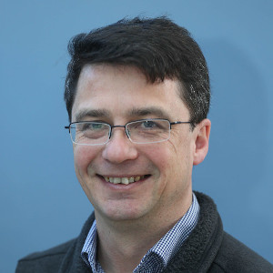

Dr Niall Madden
Senior Lecturer (Associate Professor)
School of
Mathematical and Statistical Sciences,
University of Galway, Ireland.
 orcid.org/0000-0002-4327-4234
orcid.org/0000-0002-4327-4234Profiles: University of Galway (new), University of Galway (new), and Google Scholar profile